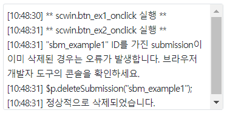

스크립트로 Submission을 생성, 삭제, 실행, 및 Submission의 객체를 반환 받는 예제입니다. 공통 스크립트 작성 시 주로 사용됩니다.
Submission 생성하기
Submission 삭제하기
Submission 실행하기
Submission 객체 정보 반환받기
이 예제는 예제 화면의 영역 [로그 확인]의 textarea와 브라우저 개발자 도구의 콘솔에 실행 결과 값이 출력됩니다.
그림 1.로그 출력 영역 참고 이미지

Submission을 생성합니다.
1. 버튼 새로고침을 클릭합니다.
2. 버튼 실행1을 클릭합니다.
3. 생성된 객체의 정보를 확인하기 위해 버튼 실행4를 클릭합니다.
4. 브라우저 개발자 도구의 콘솔로 반환된 객체를 확인합니다.
Submission을 삭제합니다.
1. 버튼 새로고침을 클릭합니다.
2. 버튼 실행2를 클릭합니다.
3. 삭제된 Submission 객체의 정보를 확인합니다.
버튼 실행4를 클릭합니다.
아래와 같은 로그가 출력됩니다.
[로그 출력 예시]
** scwin.btn_ex4_onclick 실행 **
$p.getSubmission("sbm_example1");
"sbm_example1" ID를 가진 submission객체가 반환됩니다. 브라우저 개발자 도구의 콘솔을 확인하세요.
"sbm_example1" ID를 가진 submission객체를 찾을 수 없습니다.
-----------------------------
1. 버튼 새로고침을 클릭합니다.
2. 버튼 실행3을 클릭합니다.
3. 실행 후 응답 데이터를 확인합니다.
아래와 같은 로그가 출력됩니다. (브라우저 개발자 도구의 콘솔로 응답 객체가 출력됩니다)
[로그 출력 예시]
** scwin.btn_ex3_onclick 실행 **
$p.executeSubmission("sbm_example1");
"sbm_example1" ID를 가진 submission이 없는 경고 로그가 출력됩니다. 브라우저 개발자 도구의 콘솔을 확인하세요.
submitDoneHandler
{ "dc_resUserListData":
[{
"name":"김수녕"
, "birthday" : "19710405"
, "height" : "164"
, "weight" : "58"
, "gender" : "F"
},{
"name":"김연아"
, "birthday" : "19900905"
, "height" : "164"
, "weight" : "47"
, "gender" : "F"
}]
}
-----------------------------
Submission 객체 정보를 반환 받습니다.
1. 버튼 새로고침을 클릭합니다.
2. 버튼 실행4를 클릭합니다.
3. 반환값을 확인합니다.
3.1. 생성된 Submission이 없는 경우 아래와 같은 로그가 출력됩니다.
[로그 출력 예시]
** scwin.btn_ex4_onclick 실행 **
$p.getSubmission("sbm_example1");
"sbm_example1" ID를 가진 submission객체가 반환됩니다. 브라우저 개발자 도구의 콘솔을 확인하세요.
"sbm_example1" ID를 가진 submission객체를 찾을 수 없습니다.
--------------------------------
3.2 생성된 Submission이 있는 경우 아래와 같은 로그가 출력됩니다.
[로그 출력 예시]
** scwin.btn_ex4_onclick 실행 **
$p.getSubmission("sbm_example1");
"sbm_example1" ID를 가진 submission객체가 반환됩니다. 브라우저 개발자 도구의 콘솔을 확인하세요.
action : /data/sampleData/sampleData_json_dc_list.json
ref : data:json,dma_request
--------------------------------
var jsnSubmissionOptions; //옵션 설정. jsnSubmissionOptions = { id : "sbm_example1", ref : "data:json,dma_request", //생략 가능 - $p.executeSubmission 호출시 request data 전달이 가능합니다. target : "data:json,dc_resUserListData", //생략 가능 - submitDoneHandler 함수에서 response data의 제어가 가능합니다. action : "/data/sampleData/sampleData_json_dc_list.json", mediatype : "application/json", submitDoneHandler : scwin.example_submitDoneHandler, submitErrorHandler : scwin.example_submitErrorHandler }; //submission 생성 $p.createSubmission( jsnSubmissionOptions );
아래는 이벤트 핸들러를 정의 예시입니다.
//submssion의 submitDoneHandler scwin.example_submitDoneHandler = function (e) { //응답 본문 console 출력 console.log(e.responseText); //응답 객체 console 출력 console.log(e.responseJSON); }; //submision의 submitErrorHandler scwin.example_submitErrorHandler = function (e) { //개발자 도구 console에 에러 객체 출력 console.error("submitErrorHandler", e); };
//submission 삭제. - "sbm_example1" ID를 가진 submission을 삭제합니다. $p.deleteSubmission("sbm_example1");
존재하지 않는 submission인 경우 오류 로그가 출력됩니다. 오류 로그만 출력하고 이후 로직은 수행이 되지만 해당 로그 출력을 원하지 않는 경우는 $p.deleteSubmission 호출 전 $p.getSubmission API를 통해 존재 유무를 판단 후 $p.deleteSubmission API를 호출하시면 됩니다.
//submission 실행. - "sbm_example1" ID를 가진 submission을 실행합니다. $p.executeSubmission("sbm_example1");
var objSubmission; //submisison 객체 반환 - "sbm_example1" ID를 가진 submission을 반환합니다. //반환 받은 객체의 속성을 재정의하여 사용할 수 있습니다. objSubmission = $p.getSubmission("sbm_example1"); if (!objSubmission) { //반환된 submission객체가 없는 경우 - null 반환 } else { //반환된 submission의 정보 출력 //objSubmission.action //objSubmission.ref }
$p.createSubmission( submissionObj )
$p.deleteSubmission( submissionID )
$p.executeSubmission( submissionID , requestData , obj )
$p.getSubmission( submissionID )